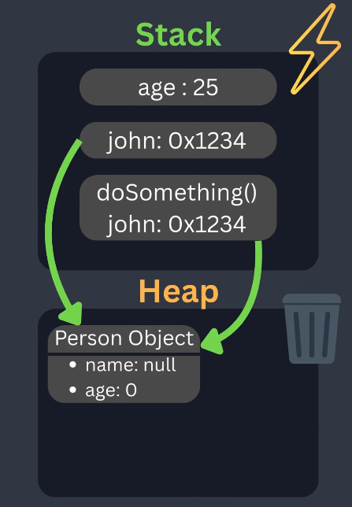

Memory Allocation
Java Memory Management
Java Memory Management is the process by which the Java Virtual Machine (JVM) allocates and manages memory during program execution. It automatically handles memory allocation and deallocation, reducing the need for manual memory management.
- Prevents memory leaks and reduces manual memory handling.
- Uses Garbage Collection to remove unused objects automatically.
- Divides memory into different runtime areas for efficient execution.
Components of JVM Memory Structure
Class Loader
Responsible for loading Java .class files into JVM memory.
- Converts bytecode into a format understandable by JVM.
- Dynamically loads classes when required during execution.
JVM Memory Area
JVM memory is divided into different runtime areas:
Method Area
- Stores class-level information such as metadata, methods, and static variables.
- Shared among all threads.
- Created when JVM starts.
Heap Memory
- Stores objects and instance variables.
- Shared by all threads in the application.
- Garbage Collector removes unused objects from heap memory.
JVM Stacks
- Each thread has its own stack memory.
- Stores local variables, method calls, and partial results.
- Memory is automatically released after method execution.
PC Registers (Program Counter Registers)
- Stores the address of the currently executing instruction.
- Each thread has a separate PC register.
Native Method Stacks
- Stores information for native methods written in languages like C or C++.
- Used when Java interacts with native libraries.
JVM Memory Structure

Execution Engine
- Executes the bytecode loaded into memory.
- Converts bytecode into machine-level instructions.
- Includes components like Interpreter and JIT Compiler.
Native Method Interface (JNI)
- Acts as a bridge between Java code and native applications.
- Allows Java programs to call C/C++ libraries.
Native Method Libraries
- Contains native libraries (.dll or .so files).
- Used by JNI for executing native methods.
import java.io.*;
class Geeks {
// static variables are stored in the Method Area
static int v = 100;
// instance variables are stored in the Heap
int i = 10;
public void Display()
{
// local variables are stored in the Stack
int s = 20;
System.out.println(v);
System.out.println(s);
}
}
public class Main {
public static void main(String[] args) {
Geeks g = new Geeks();
// Calling the Display method
g.Display();
}
}
//output :
//100
//20| Category | Stack | Heap |
|---|---|---|
| 📐 Structure | Contiguous block, linear (LIFO). | Random order, hierarchical. |
| ⚡ Performance | Fast access, low cost. | Slower access, higher cost. |
| 🛠️ Management | Automatic allocation/deallocation by compiler. | Allocation via new, deallocation by
Garbage Collector. |
| 📏 Size & Lifetime | Smaller, short‑lived (method duration). | Larger, long‑lived objects. |
| 🔒 Thread Safety | Thread‑safe, each thread has its own stack. | Shared among threads, needs synchronization. |
| 🧩 Use Cases | Local variables, method calls, primitives. | Objects, instance variables, dynamic structures. |
| ⚖️ Efficiency | Excellent memory locality, predictable. | Can suffer fragmentation, less efficient locality. |
How Java Objects are Stored in Memory
int age = 25;
Person p = new Person();
doSomething(John);

In Java, memory management is handled by the Java Virtual Machine (JVM).
Objects are dynamically stored in the heap memory, while references to these objects are stored in the
stack memory.
Declaring a variable of a class type only creates a reference; to allocate memory for the object in the
heap, the new keyword must be used.
- All Java objects are stored in Heap Memory.
- References to objects are stored in Stack Memory.
- Objects are created using the
newkeyword. - Garbage Collector manages unused objects automatically.
1. Heap Memory
Heap memory stores actual objects. When an object is created using new, space is allocated
in the heap.
Garbage collection in the heap is mandatory for automatic memory management.
- Young Generation: New objects are allocated here.
- Old Generation: Long-lived objects after multiple GC cycles.
- Permanent Generation (Java 7 and earlier): Stores class metadata. Replaced by Metaspace in Java 8.
// Example: Object stored in Heap, reference in Stack
class Student {
String name;
int age;
Student(String name, int age) {
this.name = name;
this.age = age;
}
}
public class Geeks {
public static void main(String[] args) {
Student s = new Student("bob", 20);
}
}
Explanation: The Student object is allocated in the heap, while the reference s is
stored in the stack.
2. Stack Memory
Stack memory stores local variables, method calls, and references to objects. Each method call creates a new stack frame. When the method finishes, the frame is removed and memory is released.
- Stores references to objects, not the objects themselves.
- Primitive data types and local variables are stored directly in the stack.
- Each thread has its own stack.
// Example: Variables stored in Stack
public class Geeks {
public static int calculate(int n) {
int ans = n * 10; // 'ans' stored in stack
return ans;
}
public static void main(String[] args) {
int n = 10; // 'n' stored in stack
calculate(n); // reference passed via stack
}
}
3. Garbage Collector
The Garbage Collector reclaims memory by destroying objects that are no longer in use. When an object becomes unreachable, it is eligible for garbage collection.
- Serial GC: Single-threaded, simplest form.
- Parallel GC: Default in Java 8, uses multiple threads.
- Concurrent Mark-Sweep (CMS): Minimizes pause times.
- G1 GC: Default in Java 9, optimized for large heaps.
- ZGC: Handles very large heaps with minimal pause times.
- Shenandoah GC: Low-pause collector introduced in Java 12.
4. Memory Layout of an Object
In Java, an object consists of three main parts:
- Object Header: Contains metadata like class pointer, lock info, and GC data.
- Instance Data: Actual fields/variables of the object.
- Padding: Extra memory for alignment to word size.
public class GFG{
// Stored in Method Area (Class Area)
static int staticVar = 100;
public static void main(String[] args) {
// Stack Memory (local variables & method calls)
int localVar = 10;
// Heap Memory (object creation)
Student student = new Student("Jesse Pinkman", 23);
// Program Counter Register
// JVM keeps track of which instruction is executing here
display(student);
// Native Method Stack
// Native method call
System.gc(); // Calls native code internally
}
static void display(Student s) {
// Stack frame created for this method
System.out.println(s.name + " - " + s.age);
}
}
// Stored in Method Area
class Student {
// Instance variables stored in Heap (inside object)
String name;
int age;
Student(String name, int age) {
this.name = name;
this.age = age;
}
}
//Output: Jesse Pinkman - 23
Java Stack vs Heap Memory Allocation
class Employee {
int id; // Primitive stored inside the object in Heap
String name; // Reference points to String object in Heap
double salary; // Primitive stored inside the object in Heap
public Employee(int id, String name, double salary) {
this.id = id;
this.name = name;
this.salary = salary;
}
public void display() {
System.out.println("Employee ID: " + id);
System.out.println("Name: " + name);
System.out.println("Salary: " + salary);
}
}
public class Main {
// Reference variable 'emp' stored in Stack
public static void display(Employee emp) {
emp.display(); // Accesses Employee object in Heap
}
public static void main(String[] args) {
// 'emp1' and 'emp2' references in Stack, objects in Heap
Employee emp1 = new Employee(101, "Maddy", 50000.0);
Employee emp2 = new Employee(102, "Maddy", 60000.0);
display(emp1);
display(emp2);
}
}
Output:
Employee ID: 101
Name: Maddy
Salary: 50000.0
Employee ID: 102
Name: Maddy
Salary: 60000.0

Explanation:
emp1andemp2: These are reference variables and are stored on the Stack.new Employee(...): The actual objects created by thenewkeyword are stored in the Heap.- String Pool: The literal string
"Maddy"is stored only once in the String Pool (which is inside the Heap). - Shared Reference: Because
"Maddy"is pooled, bothemp1.nameandemp2.namepoint to the exact same String object (soemp1.name == emp2.namewould evaluate to true). - Method Calls: When
display(emp1)is called, a new stack frame is created for the method, and its parameter points to theemp1object in the heap.
Garbage Collection
- Using System.gc(): This static method requests the JVM to perform garbage collection.
- Using Runtime.getRuntime().gc(): This method also requests garbage collection through the Runtime class.
- Using finalize() method: This method is called by the garbage collector before it reclaims the memory of an object.
Modern approach using cleanup api
import java.lang.ref.Cleaner;
class Employee {
private int ID;
private String name;
private int age;
private static int nextId = 1;
private static final Cleaner cleaner = Cleaner.create();
private final Cleaner.Cleanable cleanable;
// Cleanup task to run when employee becomes unreachable
private static class State implements Runnable {
@Override public void run() { Employee.nextId--; }
}
public Employee(String name, int age)
{
this.name = name;
this.age = age;
this.ID = nextId++;
// Register cleaner to decrement ID on GC
cleanable = cleaner.register(this, new State());
}
public void show()
{
System.out.println("Id = " + ID + "\nName = " + name
+ "\nAge = " + age);
}
public void showNextId()
{
System.out.println("Next employee id will be = "
+ nextId);
}
}
public class UseEmployee {
public static void main(String[] args)
{
Employee E = new Employee("GFG1", 56);
Employee F = new Employee("GFG2", 45);
Employee G = new Employee("GFG3", 25);
E.showNextId(); // 4
{ // Interns block
Employee X = new Employee("GFG4", 23);
Employee Y = new Employee("GFG5", 21);
X = null;
Y = null;
System.gc(); // Request GC
}
// Let cleaner run
try {
Thread.sleep(10);
}
catch (Exception e) {
}
E.showNextId(); // Correct: 4
}
}Next employee id will be = 4
Next employee id will be = 4Memory Leaks in Java
Memory leaks in Java occur when objects that are no longer needed remain referenced, preventing garbage collection. Over time, this increases memory usage, degrades performance, and can eventually crash the application.
- Java provides automatic garbage collection, but it cannot remove objects that are still referenced.
- Poor reference management is the main reason memory leaks occur in Java applications.

import java.util.ArrayList;
import java.util.List;
public class MemoryLeakExample {
private static List list = new ArrayList<>();
public static void main(String[] args) {
for (int i = 0; i < 1000000; i++) {
// Items keep being added but never removed
list.add("Item " + i);
}
System.out.println("Finished adding items!");
}
}
// Finished adding items! Tools to Find Memory Leaks
- VisualVM (comes with JDK)
- Eclipse Memory Analyzer (MAT)
- Java Mission Control
- YourKit Java Profiler
What happens if memory keeps leaking
program will use up all the memory as much as it can use, after some times the program will stop/crash and an error shows up:
Exception in thread "main" java.lang.OutOfMemoryError: Java heap spaceHow to avoide memory leaks
- Stop keeing things that we do not need in our program do not initialize unnecessary variables and list items to null.
- Do not let lists or caches keep growing forever without removing old stuff.
- It is always recommended to close files and database connections when we are done with them.